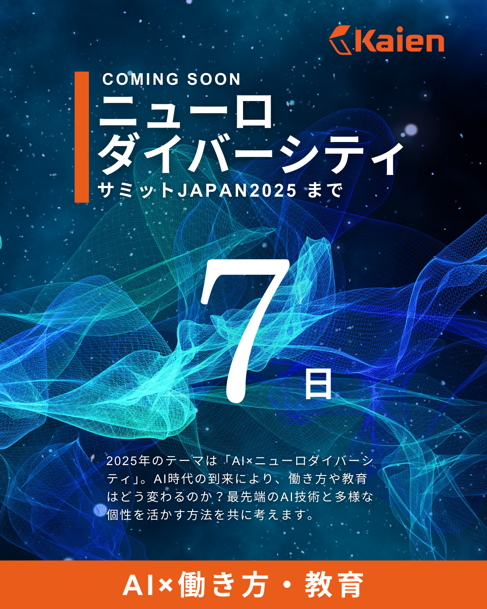
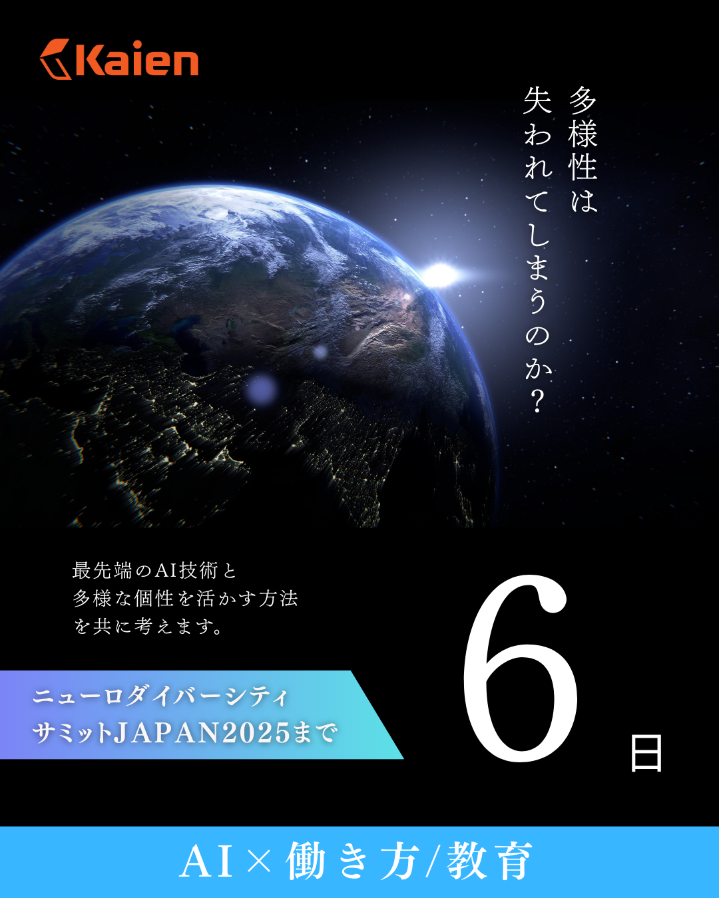
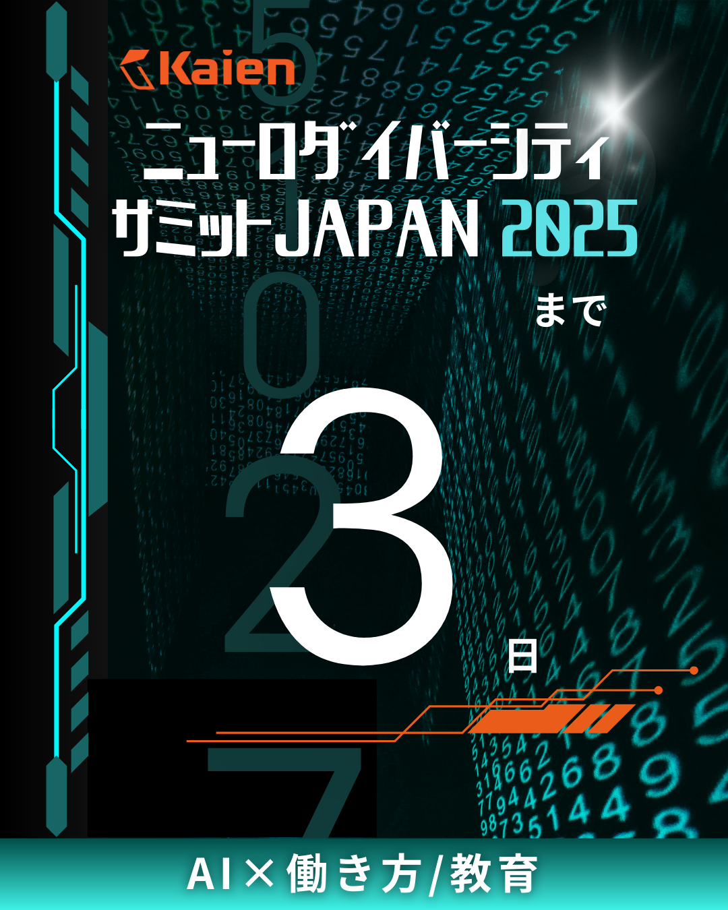
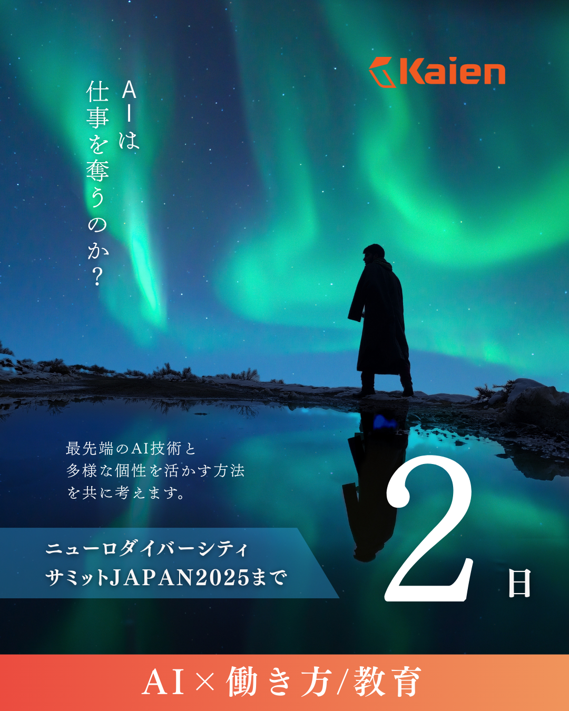
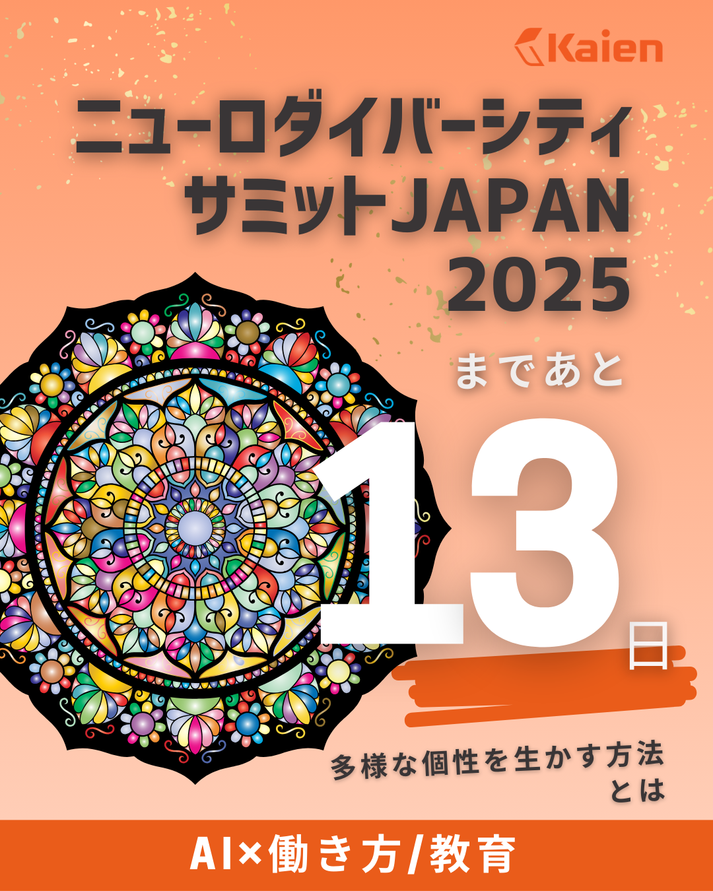
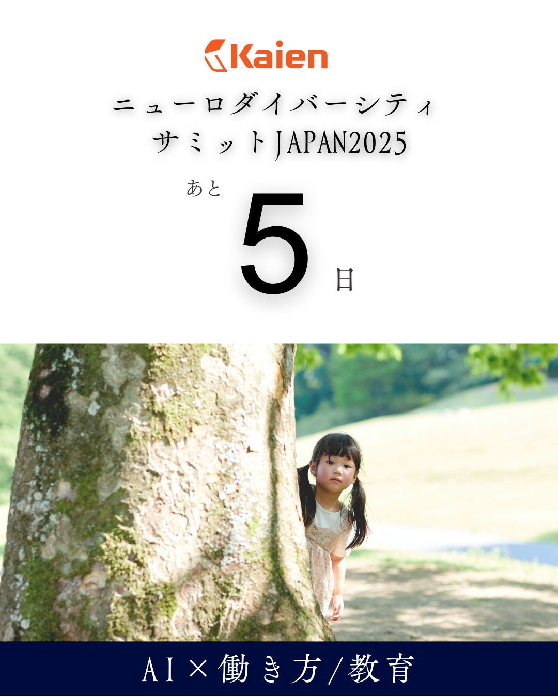
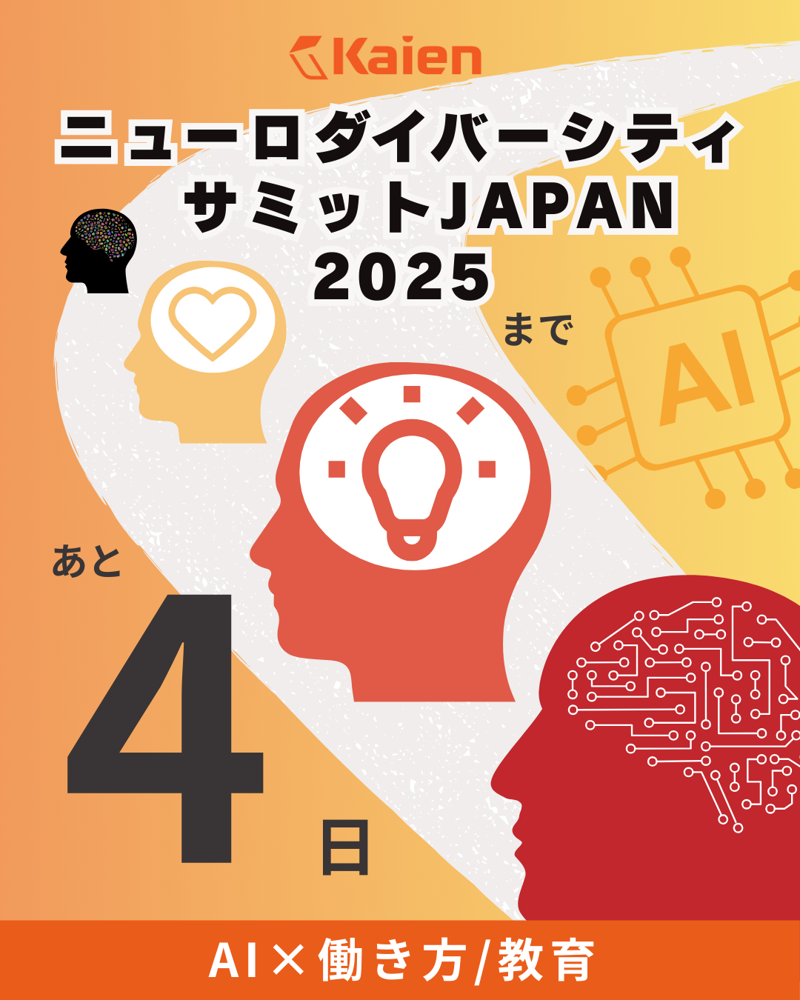

作品
SNS用バナー ～ニューロダイバーシティサミットJAPAN2025～
元々訓練用インスタグラムへの画像として公募されたが
講師の推薦により公式SNSへ掲載されました。
背景：元の公募では基本的な仕様以外は
各々が自由に「ニューロダイバーシティサミットJAPAN2025」のイメージを
表現してくださいという条件でしたが
デザインするにあたって
イベント公式ページを参考にコンセプトを
「最新のテクノロジーを扱う革新的な企業」と
「障害や発達の概念にとらわれない、新しい教育・就労のあり方」
という2つの軸で解釈し、デザインに落とし込みました。
使用ツール：Canva
作成時間：1枚あたり60～90分
掲載先：Kaien公式アカウントinstagram、YouTube、X

コンセプト：科学雑誌の表紙。kaienの論理に裏打ちされた面をイメージ。
フォント：Aial MT pro
理系論文のキャプションとして多用されるそうなので
理論を重視する方へのアウトリーチを狙いました。

コンセプト：「多様性は失われてしまうのか」という問いへの明るい回答。
フォント：筑紫B明朝。不安な心に応えるKaienの仕事の真摯さを表現しています。

コンセプト：他社との差別化。
他社がIT＝MOSやCAD等であるのに対し
KaienのIT=AI、データ分析、ゲーム制作など比較的高度で最新のイメージ。
また競合のニューロドライブさんよりは親しみやすいイメージを表現。
フォント：GN-キンイロサンセリフ。SF映画の題名デザインのイメージ。
某「きらら作品」から派生したフォントでファンが気づく可能性がありますが
それはそれで親近感を醸成し得ると考えました。

コンセプト：「AIは仕事を奪うのか？」と途方に暮れる人へKaienが応えられるイメージ
フォント：筑紫B明朝。不安な心に応えるKaienの仕事の真摯さを表現しています。

コンセプト：たくさんの色が一つのステンドグラスになって調和している。
Kaienコーポレートカラーと共に華やかなイメージ。
フォント：コーポレート・ロゴ。安心感や安定感のある企業をイメージ。

コンセプト：ニューロダイバーシティを
小さな子に見つめられたときの「この子の未来を守りたい」という願いとして表現。
教育者や学プロの潜在顧客層へのリーチをイメージしています。
フォント：筑紫オールド明朝。子供を安心して任せられる信頼とサービスの質を表現。

コンセプト：一部の特別扱いではなく万人的な合理的配慮のイメージ。
すなわち全く違う性質の脳の人たちがお互いが違う事を開示し認識して
当たり前の様に整然と進んでいく様子を表現。
フォント：ロダンカトレアUB。ニューロダイバーシティという
直帰率の高そうな言葉を親しみやすく視認性重視で表現。